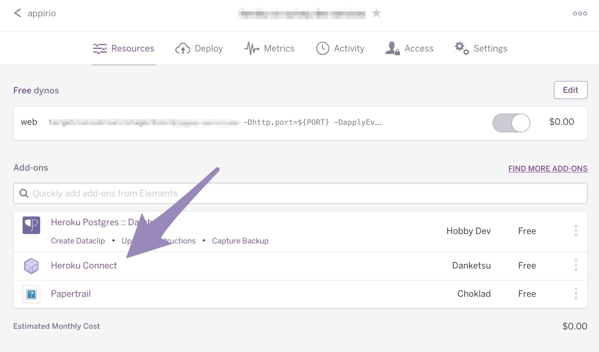
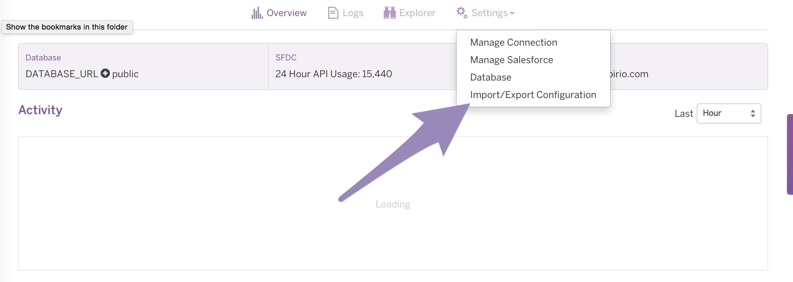
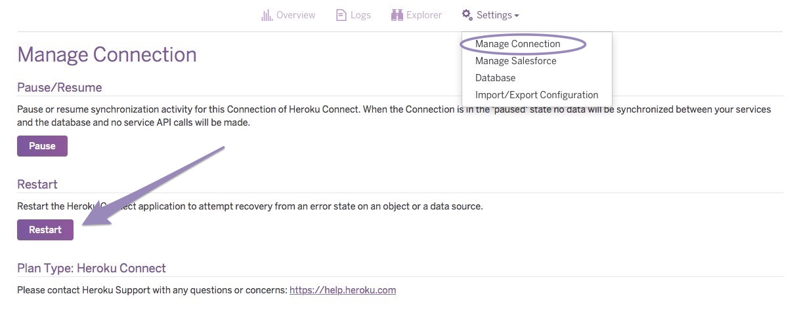

-
Deploy to Heroku using the Heroku 1-button deployment:

For Salesforce and Heroku deployments you will need Admin access to both systems.
Heroku will ask for the name of the app. Name it Mobile-Survey.
After deployment completes, you will be given the option to view your deployed site. Select this link to launch the site. It may take a few minutes to load the first time. SAVE this URL to your new site. You will come back to it after completing the Walkthrough where we will build surveys in Salesforce and setup users to access them.
-
Deploy unmanaged package to your SFDC sandbox.
*** IMPORTANT *** If your target Salesforce org is not a Developer Edition, you will have to manually add a custom field (of type Checkbox) to the Accounts object with the API name "Active__c". If you are deploying to a Developer Edition Salesforce org this field is already added. This field is required for the app to work. Verify that in your target Salesforce org now.
-
Configure Heroku Connect using the HC setup instructions to connect to your SFDC org and Postgres DB. Be sure to follow steps 1-4 and specify the schema as documented in these steps.
*** IMPORTANT *** The first step of the Heroku Connect setup process will ask you for a schema name (and will default the name to ‘salesforce’). You MUST specify "public" as the schema name or the app will not work.
-
Import Configuration JSON file with SFDC object mappings
In your Mobile-Survey Heroku app:
-
Select Heroku Connect from the dashboard
 -
Then select Settings->Import/Export Configuration and import the configuration file.
Update your Heroku configuration variables to use your Postgres database.
-
-
Update Configuration variables for Postgres DB
From your Heroku Dashboard - click into your postgres DB to view the Connection Settings
In another tab, go to your Heroku Dashboard and select Settings
- Click the "Reveal Config Vars" button
Click the "Edit" button
Change the following 3 config variables to match your DB Connection Settings:
- CC_DB_PW
- CC_DB_URL
- CC_DB_USER
*** IMPORTANT *** The CC_DB_URL must follow this format exactly - you need to populate 3 values - Host, Port, and Database. Make sure that you have NO SPACES.
Select the “Save” button to save your new configuration parameters.
EXAMPLE CC_DB_URL value: jdbc:postgresql://Host:Port/Database?ssl=true&sslfactory=org.postgresql.ssl.NonValidatingFactory
EXAMPLE CC_DB_URL value: jdbc:postgresql://ec2-54-163-228-0.compute-1.amazonaws.com:5432/d8vq61oi2hlfbd?ssl=true&sslfactory=org.postgresql.ssl.NonValidatingFactory
-
Restart Heroku Connect:
- Settings->Manage Connection:
-
Restart

Deploy / Setup
#Create a Salesforce Developer org and Install the Salesforce Appexchange Package
Prior to installing the app on Heroku, sign up for a Salesforce developer account at https://developer.salesforce.com/
Once you have logged into your Salesforce Developer org, install the following Appexchange Package:
https://login.salesforce.com/packaging/installPackage.apexp?p0=04t360000009Ugf
#Install the App via the Heroku Button
[](https://heroku.com/deploy)
In order to run the example you need to have ruby installed.
You also need to set the ClientSecret, ClientId, Domain and CallbackURL for your Auth0 app as enviroment variables with the following names respectively: AUTH0_CLIENT_SECRET, AUTH0_CLIENT_ID, AUTH0_DOMAIN and AUTH0_CALLBACK_URL.
For that, if you just create a file named .env in the directory and set the values like the following, the app will just work:
````bash
# .env file
AUTH0_CLIENT_SECRET=myCoolSecret
AUTH0_CLIENT_ID=myCoolClientId
AUTH0_DOMAIN=samples.auth0.com
AUTH0_CALLBACK_URL=http://localhost:3000/auth/auth0/callback
````
Once you've set those 4 enviroment variables, just run `rails s` and try calling [http://localhost:3000/](http://localhost:3000/)
If you have the Heroku Local Config utility installed (https://github.com/ddollar/heroku-config) you can use the following to create the .env file
````bash
heroku config:pull --overwrite
````
#Configure Heroku Connect Mapping
Once you have installed the app, the final step is to configure Heroku Connect.
To import the Heroku Connect mapping (membership-heroku-connect-mapping.json), please follow the below:
````bash
If you want to synchronize data from a new production or a refreshed sandbox organization you will need to:
Export your current configuration to a JSON file.
Navigate to the Settings tab, choose Import/Export Configuration, click the Export button and then on the confirmation page click Export to download the file.
Remove and re-provision the Heroku Connect add-on authenticating to the new Salesforce organization.
Import the JSON configuration file.
Navigate to the Settings tab, choose Import/Export Configuration, click the Import button and then click Choose file to locate the file to upload. Click the Upload button to begin the import.
On successful completion of the import Heroku Connect will begin syncing data from your new Salesforce organization into the database.
````
{kind=link}
{kind=link}
{kind=link}